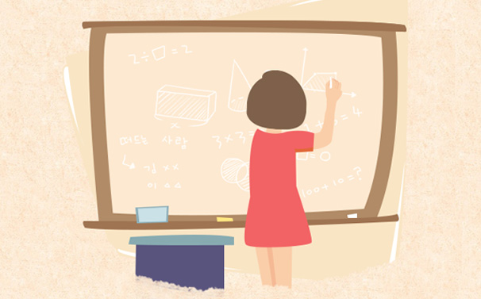
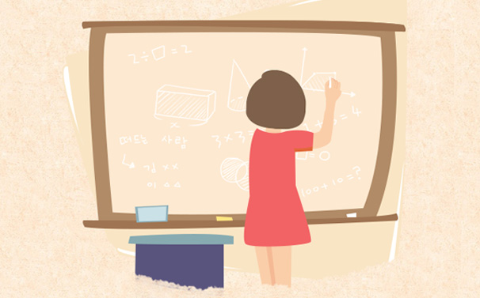

教师节快乐！
2016-07-08冯超
阅读数1300
尊师重教是中国的传统，早在公元前11世纪的西周时期，就提出 弟子事师，敬同于父”n教师节跟汇旨在肯定教师为教育事业所做的 贡献。1985年，第六届全国人大常委会第九次会议通过了国务院关 于建立教师节的议案，会议决定将每年的9月10日定为教师节。19 85年9月10日，是中国第一个教师节。

尊师重教是中国的传统，早在公元前11世纪的西周时期，就提出 弟子事师，敬同于父”n教师节跟汇旨在肯定教师为教育事业所做的 贡献。1985年，第六届全国人大常委会第九次会议通过了国务院关 于建立教师节的议案，会议决定将每年的9月10日定为教师节。19 85年9月10日，是中国第一个教师节。
